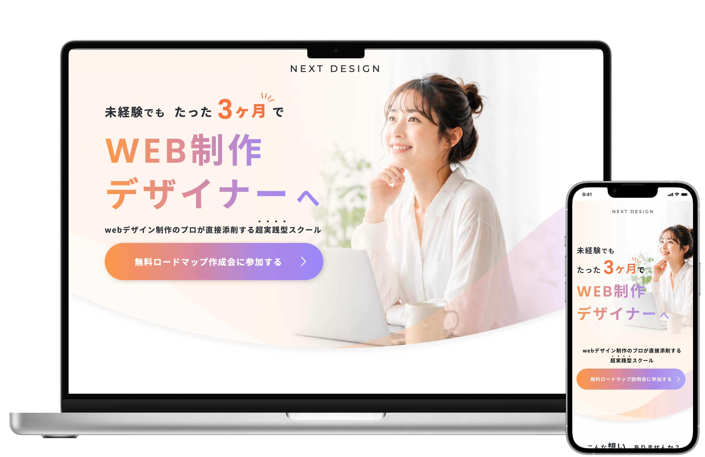
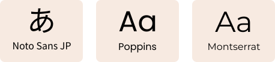
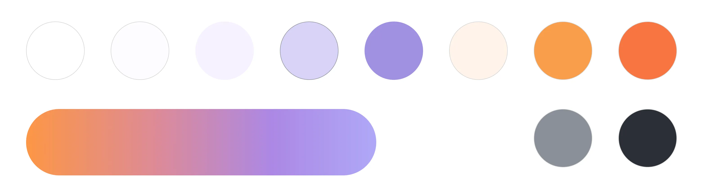

NEXT PARTNER様
WebデザインスクールLP
Web Design School Landing Page

overview
概要
未経験からWebデザイナーを目指す人に向けた、Webデザインスクール「NEXT DESIGN」の集客LPを制作しました。
現状の仕事や働き方に悩みを持つユーザーをターゲットに、スクールの特徴や受講後のイメージを分かりやすく伝え、無料ロードマップの受け取りにつなげることを目的としています。
デザインからHTML / CSSによるレスポンシブ実装まで一貫して担当し、コンバージョン計測のためMeta Pixelの設置にも対応しました。
approach
工夫したポイント
ユーザーの悩みから始める導入設計
現状の仕事や将来に不安を感じているユーザーが自分ごととして読み進められるよう、ファーストビューの後に具体的な悩みを提示しました。
その後に「なぜ結果が出ないのか」という問いを挟み、スクールの特徴や学習環境へと自然につながる情報の流れを意識しています。
reflection
制作を通して
今回の制作を通して、LPでは各セクションを個別にデザインするだけでなく、ページ全体の流れを意識して情報をつなげることの大切さを改めて感じました。
ユーザーの悩みから始まり、スクールの特徴や受講生の実績を経て、無料ロードマップの案内へとつなげる中で、次の内容へ自然に読み進められる構成や、要点がひと目で伝わる見せ方を意識して制作しました。
design system
デザインシステム
Typography

Color palette
